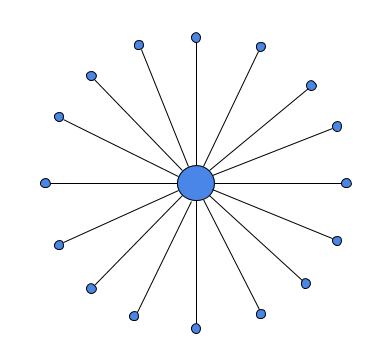

OpenBazaar is a decentralized marketplace. What does decentralized mean, and why does it matter? This article will explain the concept of decentralization without any technical jargon.
Decentralization is a way to describe how a system works. These systems can be nearly anything:
- A political system, such as a government
- A technical system, such as a computer network
- A corporate system, such as the structure of a company
- A legal system, such as the laws of a particular nation
Here’s a quick definition: decentralized means that no single person or organization has control over everyone else in a given system.
To better understand the concept I’ll give you some examples, but first, you need to understand decentralization’s opposite: centralization.
Defining Centralized Systems
If a system is “centralized,” that means one person or organization has control over everyone else. This means that the person or organization in control is able to make decisions on behalf of other people within the system, whether they like it or not. Let’s look at two examples.
A centralized political system is one where one person or organization has control over everyone else and can make decisions for them. Monarchies and dictatorships are examples of highly centralized political systems where the leader of the nation is in control.
A centralized marketplace is one where the owner of the marketplace has control over all their users and can make decisions for them. Amazon, eBay, Etsy, Alibaba and all the popular ecommerce platforms are centralized. These companies get to make and enforce the rules for all the users on their platform, such as taking a cut of every transaction, monitoring all their data, and censoring trade whenever they choose.
Centralized systems are permissioned. You need the permission of the person or organization in control in order to participate. In a country with a highly centralized political system, permission must be granted for things like printing newspapers or even traveling. If you try to use a centralized payment system such as PayPal you need their permission. Most social media platforms are centralized and require the permission of the company to use them. Permission can be granted or revoked at any time.
This image shows what a centralized system looks like. The participants in the system are on the outside, and there is one person or organization in the middle that everyone else is dependent upon.
 Centralized network with a central point of control
Centralization has its benefits. It removes ambiguity about who is in control and allows for swift action to remedy problems. For computer networks, it’s much easier to build and maintain centralized systems than decentralized ones. Having a strong leader controlling a company can help keep everyone focused.
Centralization also has drawbacks. There may not be ambiguity about who is in control, but that doesn’t mean those in control are actually competent, or moral. Centralized systems are easier to build technically, but they are also more fragile, since they have a single point of failure (if the person / organization in charge is gone, so is the system). Being permissioned means that those in power might exclude people they don’t like or agree with.
Centralized systems can change based on who is in control. Even if the system is run well by competent and moral people today, it could be run poorly by different people tomorrow.
There is an alternative to having systems so tightly controlled: Decentralization.
What Are Decentralized Systems?
As we’ve said, decentralized means that there is no single person or organization that has control over everyone else in a given system.
Participants in decentralized systems have the ability to make decisions themselves and aren’t forced to rely on anyone who controls the system. Let’s look at two examples.
A decentralized political system is one where no person or organization has the ability to govern everyone else. A completely decentralized political system would be an anarchy (absence of a governing structure). Modern democratic systems have some elements of decentralization, where participants in the system do have some control over the decision-making process and there are multiple organizations which exist to ensure power doesn’t become centralized within one portion of the government.
A decentralized computer network is a system where the computers talk directly to each other and there is no central point of control. Most online platforms today work by having a lot of computers called servers that their users are forced to connect to if they want to use the service. They are centralized and completely control the system. A decentralized computer network has no central servers that control access to the network: each users’ computer connects directly to other users’ computers, making a network of computers that no one controls. OpenBazaar is such a network, as are networks like Bitcoin and Bittorrent.
This image shows what a decentralized system looks like. The participants in the system are equal and connect with each other instead of depending on a central party.
 Decentralized network with no center
Decentralized network with no center
Decentralized systems are permissionless. Since no one controls the system, there’s no one who can stop people from joining it nor force them to leave. You can join or leave the OpenBazaar or Bitcoin networks anytime you want to.
Decentralization has its benefits. There are no gatekeepers preventing you from doing what you want to do. Decentralized systems offer more freedom than centralized systems. There is no single point of failure which makes decentralized systems more resilient. Since there’s no one in charge there is no one that everyone depends on.
Decentralization also has drawbacks. Designing systems that have no one in control is difficult to do, and if not done properly will mean the system won’t work. Being permissionless does prevent gatekeepers from excluding people, but it’s also difficult (or even impossible) to remove bad actors from the system. Decentralized networks also tend to be more difficult to use than their centralized counterparts.
The Spectrum of Decentralization
Centralization and decentralization aren’t black and white. It’s not one or the other. Most systems have a mix of centralized and decentralized attributes that fall on a spectrum. When I say “centralized systems” I mean systems that have a clear central point of control. When I say “decentralized systems” I mean systems with no clear central point of control. In practice, there are gray areas.
For example, a monarchy is a highly centralized form of governance. However, there are historical examples of monarchs’ power being constrained by other groups, such as aristocracy or religious groups, so even the most centralized form of governance imaginable isn’t fully centralized in practice.
The same is true with decentralized systems. One criticism of “flat hierarchies” within companies (an attempt at eliminating management) is that they remain flat in name only, while some people effectively become managers again over time. Or when computers in decentralized networks communicate peer-to-peer for most communications but are forced to connect to a specific server the first time they start up (called a “bootstrap node”). Maintaining perfect decentralization within a given system is nearly impossible.
It’s also true that the same system can have strong decentralized elements and strong centralized elements at the same time. This can happen in open source software projects. The software itself might be built to communicate in a fully decentralized manner, but the development process itself is completely centralized within a small group or even an individual. There are some companies who offer a platform for users which they fully control and is completely centralized, but their corporate structure itself is decentralized. In these cases, you can’t label the entire system centralized or decentralized, but only certain attributes such as governance or technical architecture.
The Importance of Decentralization on OpenBazaar
OpenBazaar is unique because of its decentralization, but that alone though isn’t what makes it compelling. What’s important about OpenBazaar being decentralized is what it enables users to do.
There is no company or organization that runs the OpenBazaar network. It’s a collection of people around the world connecting directly to each other to engage in free trade using cryptocurrencies. This lack of gatekeepers means OpenBazaar is permissionless, has no fees, is private, and has no censorship.
It wouldn’t be possible to have these attributes without being decentralized.
If a company controlled the OpenBazaar network then…
- It wouldn’t be permissionless, since they could deny access.
- It wouldn’t be private, since they could watch users’ actions on their servers.
- It wouldn’t be free to use, since they would own the infrastructure and need to take a cut to pay for it.
- It wouldn’t be censorship-resistant, since the company would need to control the network based on business and market pressures.
Conclusion
Centralized and decentralized systems exist on a spectrum and each have pros and cons. No current human system is completely one or the other. One thing they share though is that neither structure is an end goal in itself. What’s important is how these structures enable the participation of all involved parties.
OpenBazaar is not compelling just because it’s decentralized. OpenBazaar is excellent because the decentralization of the network gives users incredible freedom, privacy and autonomy in how they buy and sell online.
Do you want to help build this with us?
Download OpenBazaar right now to start buying or selling in minutes or just see what's for sale at OpenBazaar.com.
Developers, join us on Github to contribute to this open-source project!